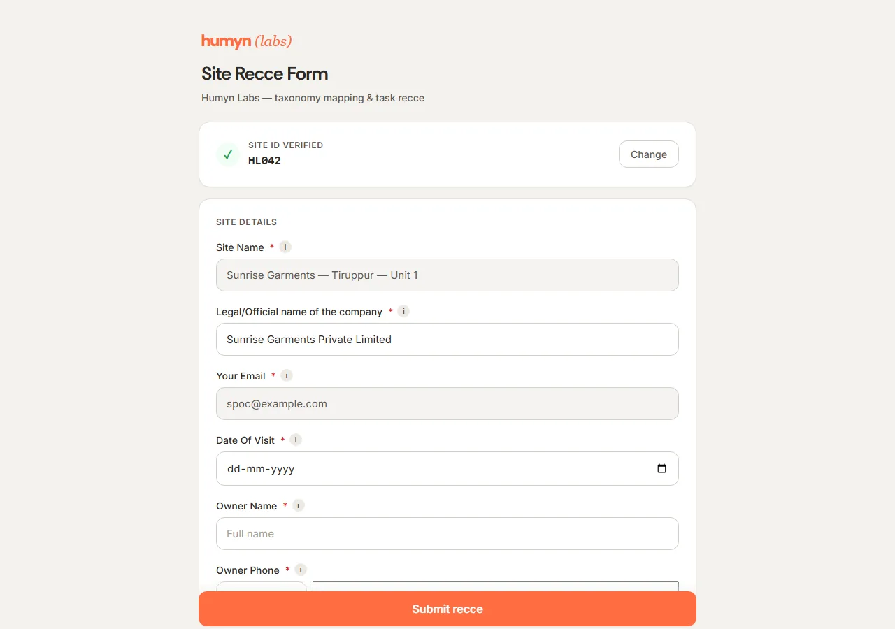
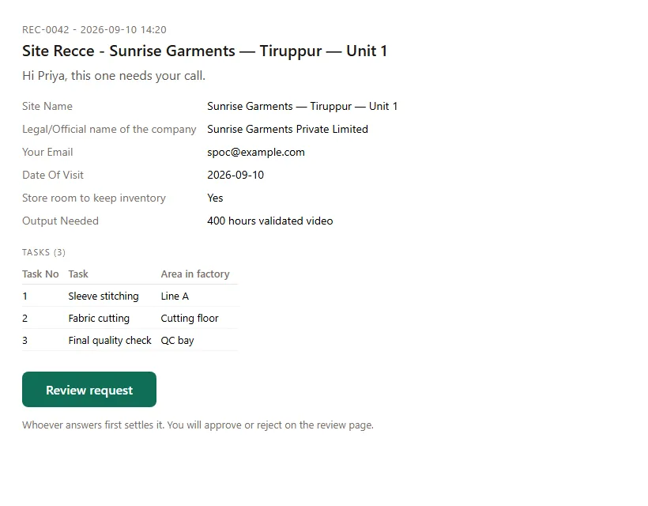
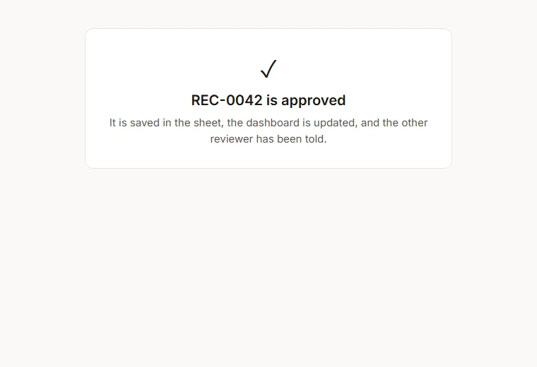
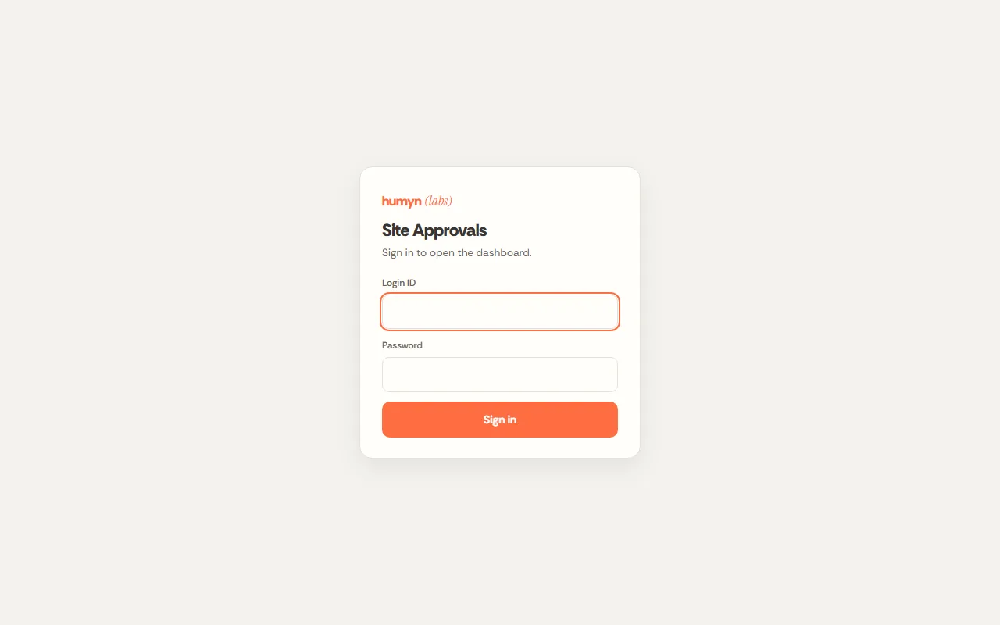

Case study · Humyn Labs (KGeN)
Site Onboarding & Approval Automation
An end-to-end system that takes a field site from first identification to an approved recce: two branded web forms, automatic Site IDs, one-click approval emails, a review page where approvers watch each task's photos and videos, automatic notifications to every stakeholder, and a login-protected live dashboard. It replaced spreadsheets, email chasing and manual tracking.
- 63sites onboarded with unique Site IDs
- 143recce tasks reviewed across 13 submissions
- <60sfrom submission to the approver's inbox
- 28/28checks passed in the latest full system audit
The problem
Humyn Labs onboards factories and work sites for field data collection in two stages: a Site Identification (is this site suitable?) and a Site Recce (a detailed survey of the tasks to be recorded there). Both stages ran on spreadsheets, email threads and manual follow-up. Approvers were reminded by hand, decisions were typed into sheets, nobody was informed automatically, site names did not match between the two stages, and there was no single view of where any site stood.
The solution
- Two branded web forms on the company's own domains, mobile-friendly, with every field, label, required flag and dropdown driven by a configuration sheet — so the business can change the forms without code.
- Automatic Site IDs: sequential, never duplicated, shown on screen in about three seconds and emailed only to the submitter. The Recce form opens only with a valid Site ID and auto-fills the site's details from its own record.
- One-click approvals: approvers receive an email with a personal, signed button. Whoever answers first settles it; forged or forwarded links are refused.
- A purpose-built review page: site details, one row per task with skill level, and photo/video thumbnails that play directly on the page. Reviewers tick the tasks they approve; Approve and Reject are mutually exclusive so an invalid decision cannot be recorded.
- Automatic notifications: approvers, the submitter (with per-task results and next steps) and the site-identification team are emailed at every decision.
- A login-protected live dashboard with every site and recce, its status, approver and timestamps. Google Sheets remain the system of record, mirrored to Supabase.
Walkthrough
How a site gets cleared, in the order it actually happens — from the first form to the approver's decision. Click any screenshot to enlarge.


{kind=link}

{kind=link}


{kind=link}

{kind=link}

Highlights
- Sample-before-deploy discipline: every change was previewed as a working sample and approved by stakeholders before going live, and every release was verified automatically and then on the live system.
- Zero-disruption rollouts: older emails and links kept working through every change.
- Silent-failure hunting: found and fixed submissions rejected by hidden required fields, answers dropped by a missing backend column, and notifications skipped when decisions bypassed the workflow — then recovered 12 missed decision emails.
- Security and governance: signed per-person links, dashboard login, dashboard links removed from emails, and an access audit that tightened who can open the response sheets.
How it runs
The forms are static pages published automatically from a GitHub repository. Site ID numbering, approval emails, the review page and the live dashboard all run inside Google's own servers on Apps Script — no server to maintain and no hosting bill. The system checks the response sheets every minute and re-checks Site IDs every five minutes as a safety net; all records are mirrored to a Supabase database that the team's Slack assistant also reads.
Tech stack
What's next
Per-site secret keys so only the person who identified a site can file its recce; reminders for approvals pending too long; saving the remaining identification fields to the sheet.